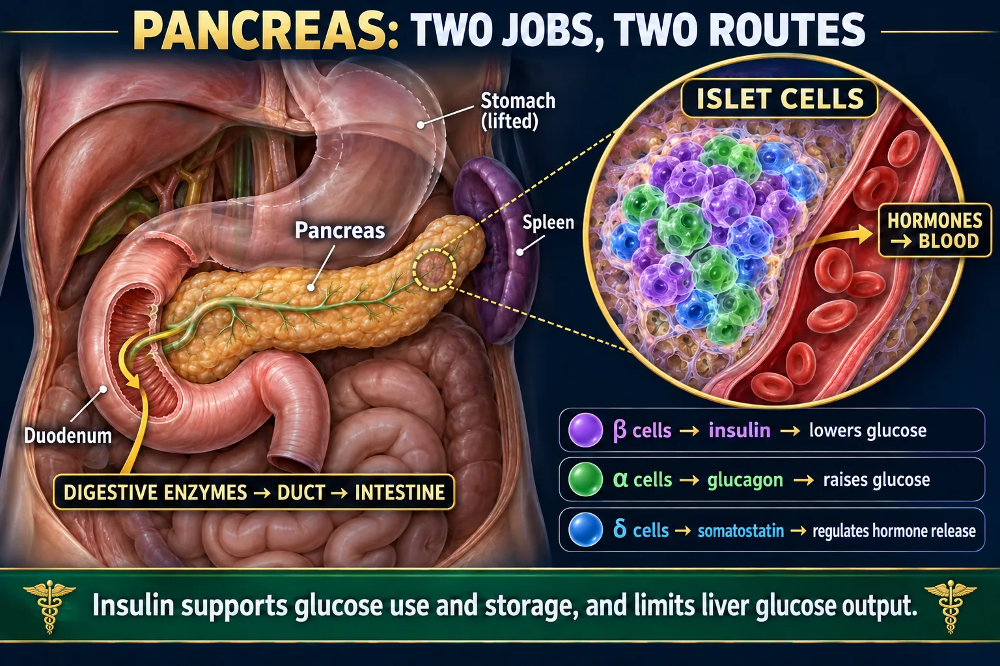
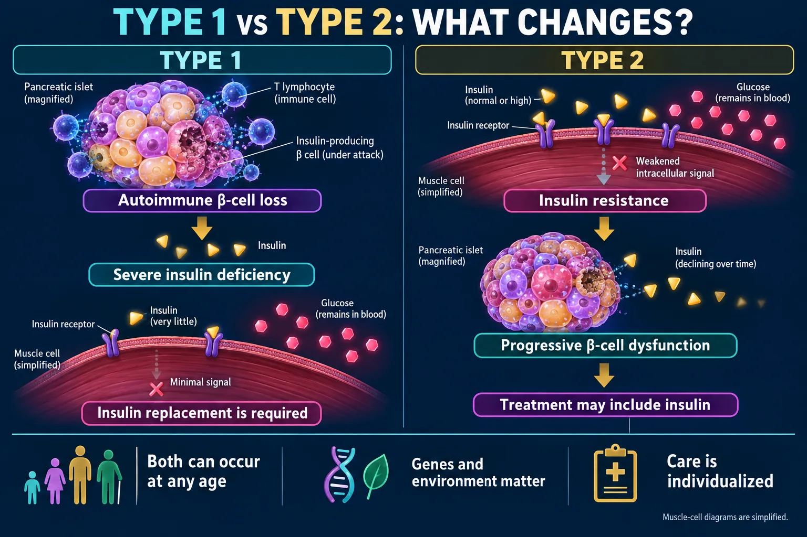
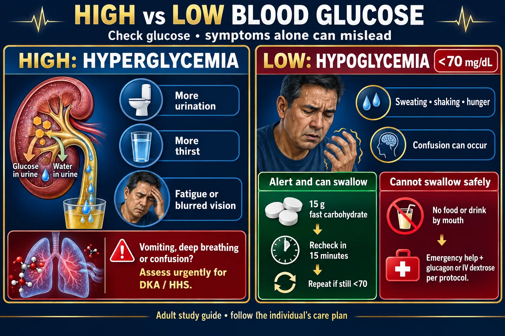
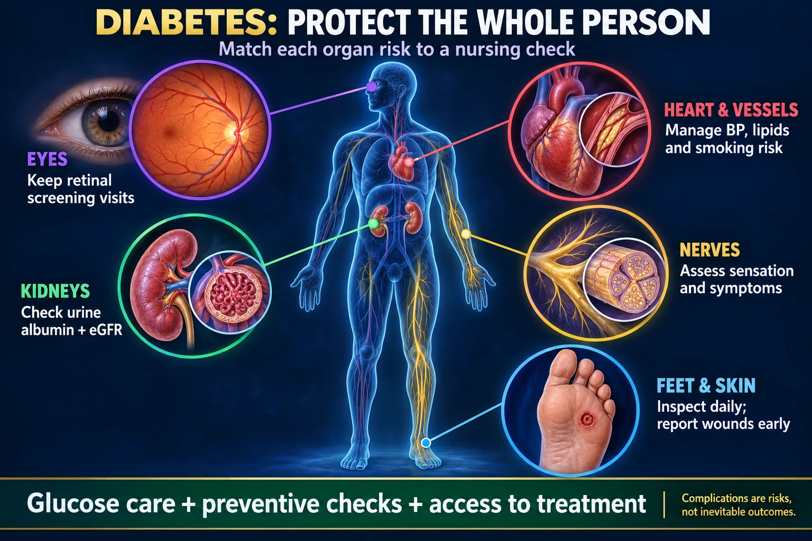

🩸 Fasting plasma glucose
- Prediabetes
- 100–125 mg/dL
- Diabetes threshold
- ≥126 mg/dL
After at least 8 hours without calories.
Part 1 of 2 — pathophysiology, the classic presentation, diagnosis, and what it destroys over 20 years
This page = the disease. What insulin actually does, why type 1 and type 2 fail in completely different ways, the 3 P's, the diagnostic numbers, and the long-term damage. The sister page NG-292 — Diabetes II = the management: insulin types and timing, oral agents, sick-day rules, the rule of 15, foot care and self-monitoring. Learn the disease here, then go treat it there.
Every single thing on this page comes from one sentence: insulin is the key that opens the cell door to glucose. Take the key away and sugar piles up outside while the cell starves inside.

Hormones enter blood; digestive enzymes enter ducts.
🔍 Open full-size image🖼️ Shown in the picture: Pancreas: endocrine and exocrine routes ↑
Answer first: insulin puts things INto the cell. Say it as IN-sulin = IN the cell.
Because insulin drives K⁺ into cells, giving insulin drops the serum potassium. This is why:
Typical adult reference range for serum potassium ≈ 3.5–5.0 mEq/L (ranges vary slightly by lab).

Insulin deficiency and insulin resistance are different problems.
🔍 Open full-size imageGlucose can't get in, so the body behaves like it is fasting even with a glucose of 400:
One is an autoimmune destruction you inherit the tendency for; the other is a receptor problem you build over years. 1 = None. 2 = Few.
🖼️ Shown in the picture: Type 1 versus type 2 mechanisms ↑
🖼️ Shown in the picture: Type 1 versus type 2 mechanisms ↑
| TYPE 1 | TYPE 2 |
|---|---|
| NONE — body does not produce insulin | FEW — insulin is made, but few receptors respond |
| Autoimmune destruction of pancreatic beta cells | Insulin resistance + progressive beta-cell fatigue |
| "SON" — heredity, you can pass it on; usually diagnosed younger | "YOU" — genes plus lifestyle-linked risk (weight, inactivity, diet); insulin resistance with tiring beta cells; usually older, but rising in youth |
| Onset abrupt — the 3 P's arrive over days to weeks, often with weight loss | Onset insidious — may be silent for years, found on a routine A1C or at the eye doctor |
| Body type: often thin at diagnosis | Body type: often overweight, especially central/abdominal |
| Ketosis-prone → tends toward DKA | Not usually ketotic → tends toward HHS |
| Treatment: insulin from day one, always | Treatment: diet + exercise first, then oral agents, then insulin if needed |
3 or more of these criteria = metabolic syndrome = increased risk of diabetes, heart disease and stroke.
Exact cut-points differ slightly between the criteria sets in use — treat these as the standard teaching numbers and verify against your course reference.
High sugar is hot and dry. Low sugar is cold and clammy. Get that reflex and half the questions answer themselves.

Measure glucose and match the response to the person’s condition.
🔍 Open full-size imageGlucose above about 180 mg/dL — or above this patient's target — and climbing (treat the trend, not one number).
Causes — the 4 S's: Sepsis/infection (#1), Stress (surgery, hospitalization), Skipped insulin, Steroids (predniSONE).
Treatment: insulin (plus fluids and treating the cause).
Glucose ≤ 70 mg/dL — and low sugar kills faster than high sugar. Hypoglycemia is the emergency.
Causes: too much insulin · insulin peak times · exercise · alcohol · a missed or delayed meal.
🖼️ Shown in the picture: High versus low glucose ↑
Four tests, three zones each: normal · pre-diabetes · diabetes. A1C ≥ 6.5% is the headline number.
After at least 8 hours without calories.
Use the standardized laboratory test.
Consider factors that affect red blood cells.
Without unequivocal hyperglycemia, confirm an abnormal result.
Nonpregnant diagnostic thresholds. Pregnancy uses separate testing pathways. Home glucose meters are for monitoring, not establishing the diagnosis.
Answer first: A1C is a 3-month report card, not a snapshot. Glucose sticks to hemoglobin inside red cells; RBCs live about 120 days, so the % glycated reflects the average sugar over roughly 2–3 months.
Placental hormones cause insulin resistance in pregnancy. Screening is usually a glucose challenge around 24–28 weeks, confirmed with a longer tolerance test if abnormal.
It usually resolves after delivery — but it flags a markedly higher lifetime risk of type 2, so the patient needs ongoing screening. Babies can be large (macrosomia) and may drop their own sugar after birth once the maternal glucose supply stops.
Chronically high glucose glycates and thickens vessel walls. Small vessels go first (micro), then big ones (macro). Every long-term complication is a blood-vessel story.

Each organ risk has a practical assessment or prevention step.
🔍 Open full-size imageThe #1 cause of new blindness in working-age adults. Capillaries balloon (microaneurysms), leak (exudates, macular edema), then the retina grows fragile new vessels that bleed.
Nursing: annual dilated retinal exam even with no symptoms — damage is silent until it isn't. Report sudden floaters, "curtain" or vision loss immediately. Also screen for cataracts and glaucoma.
The leading cause of end-stage renal disease. The glomerular filter thickens and leaks: first albumin, then protein, then a rising creatinine and falling eGFR.
Nursing: annual urine albumin-to-creatinine ratio + eGFR; tight BP and glucose control; ACE inhibitors / ARBs are commonly used for renal protection. Watch nephrotoxins — IV contrast and NSAIDs.
Stocking-and-glove distribution: burning, tingling, then numbness. Numbness is the dangerous stage — the patient stops feeling injuries.
High glucose impairs white-cell function and feeds organisms; poor circulation stops antibiotics and oxygen reaching the tissue.
From Codex’s 7 Oct review, sources checked that day. For tests and NCLEX-style questions, answer the way your textbook teaches.
This page was the disease. NG-292 — Diabetes II is the treatment: insulin types and their onset/peak/duration, oral agents class by class, sick-day rules, hypoglycemia and the rule of 15, foot care and self-monitoring teaching. NG-291 — DKA vs HHS covers the two hyperglycemic emergencies.